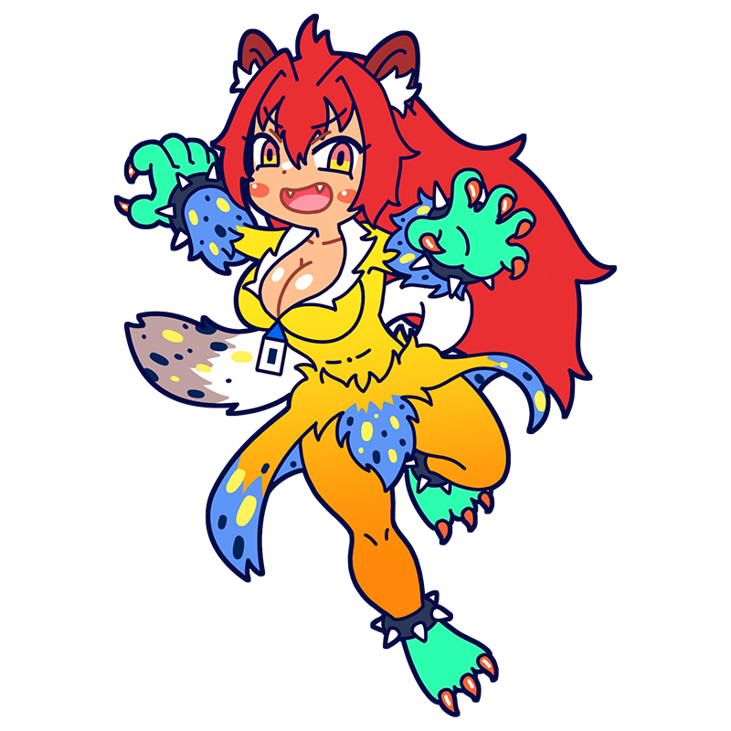

ガルルルッ！ てめえら、
しょぼい芸術やってんじゃねぇぞッ！
ヴラマンク
野性を檻から解き放て
伝統をえぐる色彩の爪
アカデミズムを嫌悪し独学で絵画を研究した、フォービスム（野獣派）の代表的なミューズ。体は大きく性格は短気、暴れ始めると手が付けられない。作品もパワフルで、荒れ狂う色彩は、まるで伝統を破壊する爪と牙のようだ。
様式
フォービスム
出身国
フランス共和国
代表作
"シャトーのセーヌ川"
"カフェバーにて"
"ブージヴァルのレストラン『ラ・マシン』" etc.
ヴラマンクといえばこの一枚！
シャトーのセーヌ川
フォービスムの先駆けとなるヴラマンクの作品の一つ。フランス・セーヌ川に面する町、シャトーの景色を描いたもので、独学で絵を学んだヴラマンクが愛したファン・ゴッホの影響が感じられる。チューブから出した絵の具をそのまま擦り付けたとも言われる荒い筆致と色彩はまさしく「野獣」の名にふさわしい。
制作年
1906年
技法・材質
油彩、キャンバス
寸法
81.6 cm x 101 cm
所蔵
メトロポリタン美術館
（アメリカ）
作品画像出典: https://en.wikipedia.org/wiki/File:SeineChatou.JPG
ヴラマンクってどんな芸術家？
モーリス・ド・ヴラマンク
フォービスムを代表する画家。かつては自転車レーサーや音楽教師として生計を立てていたこともある才気溢れる人物であり、ゴッホの激しい色彩と筆致に強い影響を受け独学で絵を描き始めた。とりわけ風景画を得意とし、鮮やかな色と荒い筆使いでフランスの自然や街並みを情感豊かに描き出した。伝統やアカデミズムを嫌い、日本の画家・佐伯祐三の絵をアカデミックだと怒鳴りつけたエピソードは有名である。
フルネーム
Maurice de Vlaminck
誕生
1876年4月4日
死没
1958年10月11日(82歳没)